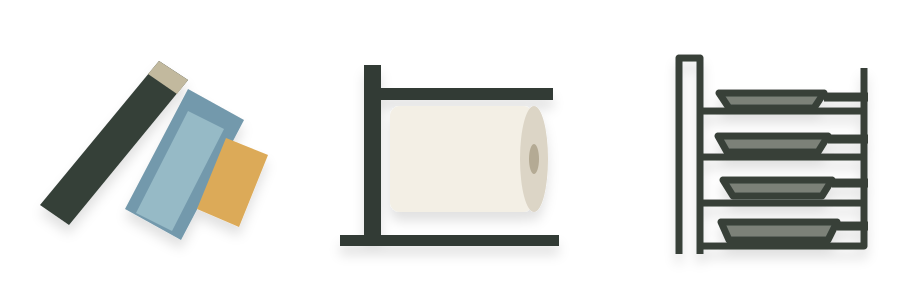
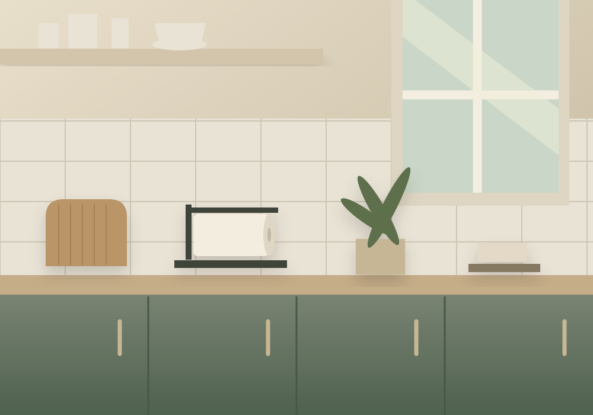

Walls & finishes
Art3d wallpaper smoothing tool kit
Planning a peel-and-stick project? Start with the tools and your wall’s requirements.
Explore the observed listing ↗Listing observed Nov 20 · Product intent unconfirmed
Practical finds and thoughtful buying guides for the spaces you use most. Less guesswork. More home.
Explore the edit ↗
THE EVERYDAY KITCHEN · EDITORIAL ILLUSTRATION3 products shown

Planning a peel-and-stick project? Start with the tools and your wall’s requirements.
Explore the observed listing ↗Listing observed Nov 20 · Product intent unconfirmed
A place for the everyday roll. Compare mounting options before you choose.
Explore the observed listing ↗Listing observed Nov 20 · Product intent unconfirmed
Give your cookware a home. Check cabinet and pan dimensions first.
Explore the observed listing ↗Listing observed Nov 20 · Product intent unconfirmed
From the submitted links. Listing destinations observed; intended products and affiliate tracking not yet confirmed. See the source notes.
Start with your surface, then choose your tools.
DIY HOME Editorial · Buying checklistA buying checklist for your paper towel holder.
DIY HOME Editorial · Buying checklistMeasure the space you have, not the space you hope for.
DIY HOME Editorial · Buying checklist